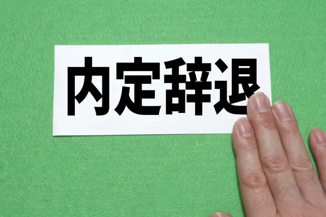
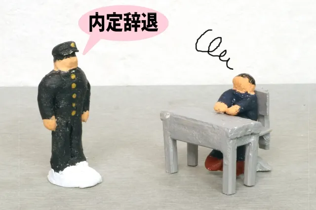
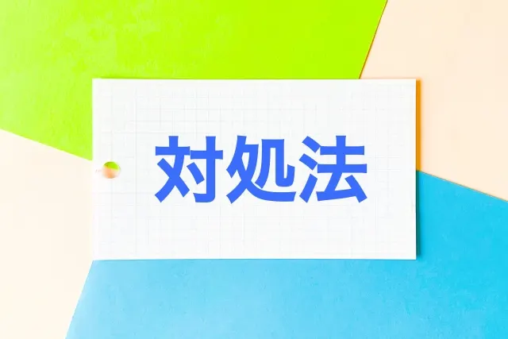

内定辞退を防ぐ5つの方法を原因とセットで紹介


「この学生は我が社にぴったり！ぜひ採用したい」と内定を出したものの、入社前に内定辞退の連絡が入ってしまうことがあります。予定通りの採用ができずに悩んでいる人事担当者も多いのではないでしょうか。
学生との関わり方の見直しが、内定辞退を防ぐポイントです。この記事では人事歴30年の筆者が、内定辞退を防ぐための対策を教えます。
最後まで読めばヒントが得られるので、ぜひ参考にしてみてください。
内定辞退の原因5選

学生が内定を辞退する代表的な原因として、以下の5つが挙げられます。
- 第1志望の企業に内定をもらった
- 希望する条件とは違っていた
- 社風が思っていたイメージとは違った
- 面接での対応に不信感を抱いた
- 時間が経つにつれて気が変わった
1. 第1志望の企業に内定をもらった
学生にとって自社が第1志望ではないことが、よくあります。そのため、第1志望の企業から内定をもらった場合、内定辞退されてしまうケースは少なくありません。
学生自身が、自分の目標やビジョンに合った企業に進むのは仕方のないことです。しかし、学生の第1志望になれなかったことに根本の原因があります。自社の魅力を十分にアピールできなかった可能性があるでしょう。
2. 希望する条件とは違っていた
学生が重視する労働条件はさまざまです。給料や休日、福利厚生、キャリアアップ支援など重要度が人によって異なります。自分の希望と実際の条件に相違があると内定後に気付いた場合、内定辞退する可能性が高くなるのです。企業側の説明不足で相違が生じるケースも少なくありません。
また、給与や残業などの質問は合否に影響すると感じ、質問しない学生も多くいます。そのため、説明会で細かく説明したり学生が質問しやすい雰囲気を作ったりする配慮が必要です。
3. 社風が思っていたイメージとは違った
価値観や働き方のスタイルが合わないと感じれば、入社意欲が低下し、内定を辞退する理由になります。社風は説明会や面接では伝えにくいため、「自分が想像していたイメージとは違う」と学生に感じられやすいのです。
社風を事前に知ってもらうためには、自社のホームページやSNSを利用して、社員の声や実際に働いている風景などを発信するとよいでしょう。また、カジュアルミーティングなどで、実際に社員が社内の雰囲気を話すことも効果的です。
4. 面接での対応に不信感を抱いた
問い合わせ時の対応や面接担当者の印象が悪かった場合、企業に対して悪い印象をもち内定辞退することがあります。面接時の横柄な態度や、誠実さを感じられないなど面接官に問題があるケースも少なくありません。
また、連絡が遅かったり、選考期間中のフォローが不十分だったりすると、不信感を抱かれます。面接の印象は良くても、その後の対応の悪さが内定辞退につながる恐れがあるので気をつけましょう。
5. 時間が経つにつれ気が変わった
就活が落ち着くと「本当にこの企業でよかったのか」「もっと自分に適した企業があるのではないか」と思い、気が変わって他社を受験して内定辞退する学生もいます。また、面接時間が極端に短いことや、即内定が出た場合なども「自分ではなく誰でもいいのではないか」と思ってしまうケースもあります。
このような思いを抱かせないためにも、面接でしっかり会話することや社長自ら想いを込めて内定を出すことが効果的です。「自分は歓迎され、必要とされている」と感じてもらえれば、時間が経っても気が変わりにくくなります。
内定辞退を防ぐ5つの方法
内定辞退は、対策を講じることで防げます。ポイントは「しっかり伝えること」と「コミュニケーションをとること」です。
主な方法として、以下の5つがあります。
- 説明会や面接で魅力を伝える
- 条件を明確に記載し、募集段階でフィルターにかける
- 学生が社員と会話できる機会を作る
- 3:7の割合で学生の話を聞く
- イベントを開催して学生と定期的に接触する
1. 説明会や面接で魅力を伝える
内定辞退を防ぐためには「ここで働きたい」と思ってもらうことが重要です。説明会や面接で魅力を伝えられなければ、学生の志望度が下がってしまいます。
逆に魅力が伝われば、学生にとって自社が第1志望になる可能性もあるでしょう。たとえば、年齢の近い社員と説明会で話をする機会を作り、ホームページや説明資料だけでは伝えきれない会社の魅力について話すのも効果的です。
実際に働いている社員の声はとても説得力があります。
また、選考を突破するごとに自社への志望度が高まるような工夫も必要です。たとえば、説明会では配布しなかった業界誌を渡すのは効果があります。
「特別なものをもらった」という満足感が得られ、徐々に学生の入社意欲が高まるのです。
2. 条件を明確に記載し、募集段階でフィルターにかける
手当や休日、福利厚生などの条件面は、学生にとってマイナスに捉えられる項目は書きたくないところですが、明確に書いておく必要があります。学生にとって何を重視するかは異なるので、必ずマイナス要因になるとは限りません。
開示されている情報を見て「条件が合わない」と思えば、学生は応募しません。つまり、応募時のフィルタリングができます。
他社にはない魅力的な条件を伝えることも重要ですが、人によってはマイナスとなる条件も明確に伝えましょう。
3. 学生が社員と会話できる機会を作る
学生は「ここで活躍できるだろうか」「馴染めるだろうか」などの不安を多く抱えています。不安を抱えたまま入社するとモチベーションも上がりません。
不安を解消するためには、同じ気持ちを体験した社員に話をしてもらうのが一番効果的です。内定者懇談会などのイベントを定期的に開催し、できるだけ多くの社員と会話できる機会を作り、気軽に質問できる環境を整えましょう。
内定者同士が会う機会にもなるため、横のつながりもできやすくなります。先輩社員との信頼関係や、内定者同士の仲間意識が生まれることで「一緒に頑張ろう」という気持ちになり、入社意欲が高まります。
4. 3:7の割合で学生の話を聞く
会社説明会や面接で一方的な企業の紹介だけになっているケースも少なくありません。学生は何かしらの疑問を持っています。一方的な説明ばかりだと質問する機会がないばかりか、担当者のイメージダウンにもつながりかねません。
納得して入社を決めてもらうためには「学生の話を聞く」ことが重要です。「話す」と「聞く」を3：7の割合にして、学生の話を聞きましょう。
大勢の前では質問しづらい学生に配慮して、メールやSNSなどでも質問しやすくするのがおすすめです。
5. イベントを開催して学生と定期的に接触する
内定辞退を防止するためには、内定後も定期的に学生と接触しましょう。新卒は内定から入社まで半年以上の期間があるため、入社まで放置されると不安になります。
周りの人たちと会話する中で、他の企業に魅力を感じてしまうことは少なくありません。「内定を出したら終わり」ではなく、入社意欲を維持できるよう定期的に学生と接触する必要があります。
接触の方法はイベントの開催が効果的です。会う回数を増やせば社員との親近感や信頼関係が生まれ、内定者同士の絆も深まり入社意欲が増します。
- 座談会
- 会社見学会
- 経営陣との交流会
- 職場体験
- 内定者懇親会
あまり回数が多くてもプレッシャーになるため、月1回程度がよいでしょう。イベントには話のしやすい、年齢の近い社員を出席させるのがポイントです。
内定辞退が起きたときの対処法

内定辞退の連絡があった場合、引きとめてみるのもよいでしょう。ただし、熟慮した末に出した判断であるケースがほとんどなので、気持ちを変えることは難しいのが一般的です。
企業イメージの低下にもつながりかねないので、相手の気持ちを尊重し、強引に引きとめるべきではありません。大事なのは「なぜ辞退されたのか」を分析し「今後どう防ぐか」を考えることです。
もし理由が聞けるようであれば、以下の点をヒアリングしましょう。
- 自社が合わないと思った理由
- 他社に決めた理由
- 同業種か異業種か
筆者の場合は、応募してもらったことへのお礼を述べてから「今後の採用活動の参考にするために、アンケートにお答えください」と言って質問していました。ただし、しつこく聞くのは禁物です。
内定辞退を回避しやすい3つの採用手法
内定辞退を回避するためには、採用方法の見直しも有効です。従来の採用方法に加えて、以下の3つを取り入れると効果があります。
- ダイレクトリクルーティング
- リファラル採用
- 採用代行の利用
1. ダイレクトリクルーティング
ダイレクトリクルーティングとは、企業側から学生へ直接アプローチする採用手法のことです。従来の「募集して応募を待つ」採用手法とは異なり、企業自ら自社にマッチした学生を探してアプローチする「攻めの採用手法」として注目されています。
メリットは以下の4つです。
- 優秀な学生にアプローチできる
- 選考の効率化やミスマッチ防止
- 採用コストを抑えやすい
- 企業の魅力を伝えやすい
一方で、スカウト文面の作成などの手間やノウハウが必要になるため、効率よく採用するためには支援サービスを利用するのがよいでしょう。
2. リファラル採用
リファラル採用とは、従業員や社外の取引先などから人材を紹介してもらう採用手法です。
該当する学生のことを詳しく知っている人からの紹介のため、履歴書やESだけでは見えない人柄も把握できます。したがって、ミスマッチが起こりにくく定着率が高くなります。
ただし、紹介した社員と学生との関係が悪化しないように配慮したり、人材の偏りがないよう注意が必要です。リファラル採用は、紹介した社員と価値観や志向が近い人材が集まりやすい傾向があります。
一方で、多様な価値観を持った人材を集めにくくなるデメリットがある点には注意が必要です。
3. 採用代行の利用
採用代行は、採用に関わる一連の業務の全て、あるいは一部を業者に依頼して代行してもらう手法です。採用代行には、募集から内定者フォローまでの一連の業務はもちろん、応募学生への対応や面接日程調整など細かい採用業務を任せられます。
採用のプロに任せれば辞退率が下げられることに加え、採用担当者が本業に集中できるメリットがあります。人手が少なく、採用にかける時間が取りにくい企業にとっておすすめのサービスです。
内定辞退を防ぐには学生との関わり方が大事

内定辞退の理由は人によってさまざまですが、「自社に魅力を感じなくなった」もしくは「コミュニケーション不足で不安になった」のどちらかである場合がほとんどです。したがって、学生との関わり方を見直し計画的な対策を講じることで防げます。
具体的な防止策として、説明会等での魅力伝達や明確な条件提示、社員との交流機会、内定後の定期フォローが有効です。
企業が学生一人ひとりに真摯に向き合い、魅力と誠意を伝え信頼を築くことが不可欠です。特に、入社までの期間が長いので、内定者フォローは欠かせません。
本記事で紹介した関わり方を参考に、学生に選ばれる企業を目指し採用を成功させましょう。
採用・人事やAI活用のご相談を受け付けています
AI研修、AI導入支援、採用支援、記事の執筆など、まずはお気軽にご相談ください。
ご相談はこちら